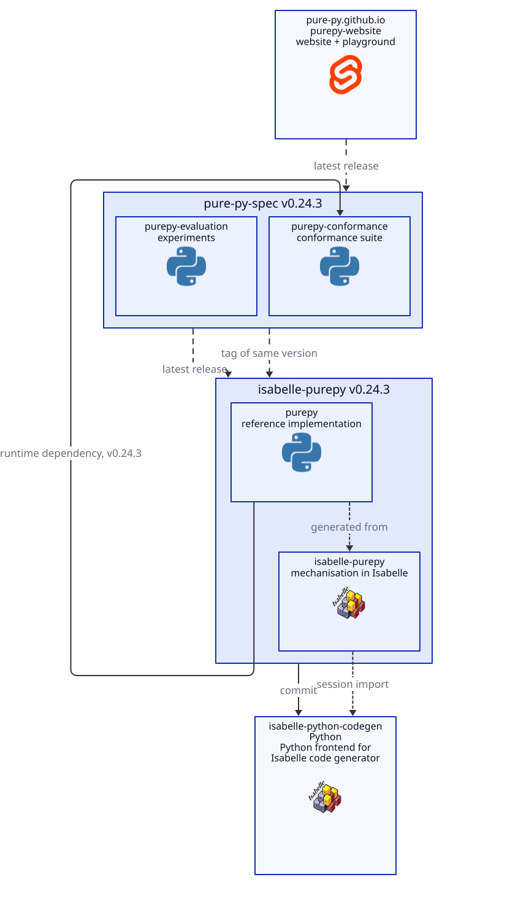

Updated UTC.

| Repository | Pull request | Author | Review | Checks | Updated |
|---|---|---|---|---|---|
| isabelle-purepy | #22 Complete the semantics | nikolaushuber | none | passing | 2026-10-29 |
| isabelle-python-codegen | #4 Test oracle approach which directly compares Isabelle (SML backend) to its extracted Python | dorchard | none | failing | 2026-10-23 |
| pure-py-spec | #305 change conformance suite to run reference interpreter | nikolaushuber | none | passing | 2026-10-30 |
| pure-py-spec | #299 print, sys.argv, binary ops for lists and tuples | nikolaushuber | none | passing | 2026-10-31 |
| Repository | Pull request | Author | Review | Checks | Updated |
|---|---|---|---|---|---|
| isabelle-python-codegen | #6 Fixes for oracle | dorchard | none | none | 2026-10-23 |
| pure-py-spec | #129 WIP grammar definition in Ott | nikolaushuber | none | passing | 2026-10-26 |
| pure-py.github.io | #20 Integrate playground | jacobpake | approved | passing | 2026-10-30 |